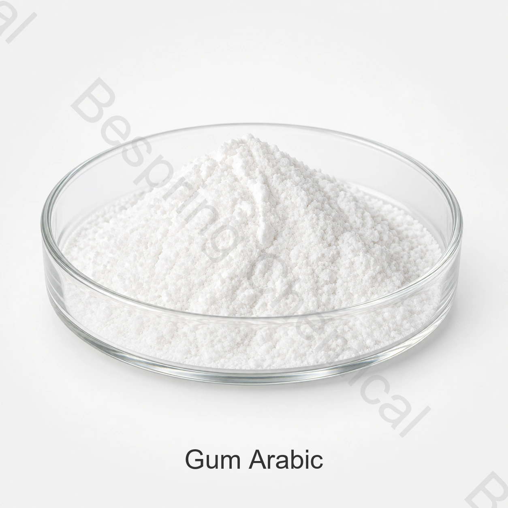

食品等級のガムのアラビア語 サプライヤー
厳密な等級かタイプ、適用、量、パッキング、先および必須文書を置いて下さい。
食品グレード成分・ハイドロコロイド・食感システム・GA
ガムアラビックは、アカシアガムとも呼ばれ、乳化、カプセル化、フィルム形成、結合および適切な食品のテクスチャに使用される植物性ハイドロコロイドです。

製品イメージ・注文時にグレード・パッケージの確認
正確な等級、適用、量、パッキング、先および必須文書を共有して下さい。
グレード食品等級、源の資格の対象となる
仕様書販売から入手可能な現在の文書
パッキング:ソース固有のオファーで確認
バッチ証拠供給されたロットのために利用できる現在のCOA
直接プロダクト 答え
ガムアラビックは、アカシアガムとも呼ばれ、乳化、カプセル化、フィルム形成、結合および適切な食品のテクスチャに使用される植物性ハイドロコロイドです。
商業適性は、正確なソース、意図された機能、完全な食品プロセスおよび宛先市場規則に依存します。このページは、予備的な資格をサポートしています。現在の署名された仕様と販売によって供給されるバッチCOAは、注文を支配します。
調達チェックリスト
サンプルを要求するか、または順序を置く前に提供された等級、適用条件および商業言葉を比較して下さい。
厳密な等級かタイプ、適用、量、パッキング、先および必須文書を置いて下さい。
ソース固有のオファーを現在の仕様、インコターム、目的地、配送ウィンドウでリクエストします。
完全な方式、プロセス条件、ターゲット機能および完成品のテストを共有して下さい。
アイデンティティ、方法、COA、SDS、証明書、トレーサビリティ、および変更制御の期待を修飾して下さい。
応募選考申込
これらは、普遍的な承認、投与量の推奨事項、または保証された結果ではなく、スクリーニング領域です。 最終食品の法的使用と技術的性能を確認します。
混合、加熱、冷却、およびサービングを通して完全な調理法をテストして下さい。承認された制御に対する粘度、分離および質を比較して下さい。
問題が沈殿物であるか、蛋白質の不安定性かマウスフェールを識別して下さい。実際の蛋白質、鉱物および熱処理の条件と選ぶ等級をテストして下さい。
原料の挙動を利用可能な水分、糖濃度および加熱サイクルに合わせ、代表的な保管後の最終製品を評価してください。
フロー、水分離、テクスチャの測定可能なターゲットを設定します。候補グレードを比較するときに、同じ準備条件とテスト条件を使用してください。
技術的な選択
個々のポリマー、植物由来原料、改質内容、標準化用の配合成分を指定してください。系統名だけでは、相互に置き換え可能な一つの市販グレードを特定できません。
濃度、水質、水和時間、温度、測定機器の設定を合意してください。異なる方法で得られた粘度値を、同等の仕様として比較することはできません。
実際のレシピpH、ミネラル含有量、溶性固形物、熱負荷で試行を実行します。成分追加注文の効果を確認してください。
微生物学的基準、ソース、アレルゲン宣言を意図した食品にマッチさせます。 正確な成分のアイデンティティと宛先ラベルの要件を確認します。
プライベート技術文書
Bespring Chemicalは、オンラインでこの成分の製品仕様を公開しません。 ソース固有の仕様またはTDSのセールスに連絡し、そのリビジョン、方法、条件があなたの購入要件に一致していることを確認します。
現在の署名された指定か TDS、SDS、分析方法、代表COAおよびバッチCOAを要求して下さい。
適切な食品安全、起源、アレルゲン、コーシャ、ハラールおよびサイト証明書を正確なグレードとソースに確認します。
レビュー FAO/WHO JECFA仕様とコーデックスGSFA、そして厳密な終了する食糧に現在の宛先市場の規則を適用して下さい。
コンプライアンスノート: 国際的なアイデンティティか標準はあらゆる適用を承認しません。各目的地の市場の食糧部門、使用レベル、ラベルの宣言および他の条件を確かめて下さい。
貯蔵および処理
バイヤーの質問
ガムアラビックは、アカシアガムとも呼ばれ、乳化、カプセル化、フィルム形成、結合、および適切な食品のテクスチャに使用される植物性ハイドロコロイドです。 正確なソースの現在の署名された仕様は、供給を支配します。
CAS 9000-01-5;INS 414;アカシアのゴム;植物のexudate。家族および定形プロダクトは確認されるべき厳密なメンバーおよび完全な構成を要求します。
Bespring Chemicalは、本製品の仕様をオンラインで公開しません。 ソース固有の仕様またはTDS、方法および代表的なCOAのセールスにお問い合わせください。
現在の仕様またはTDS、SDS、代表者、およびバッチCOA、および関連する食品安全、アレルゲン、起源、コーシャ、ハラールおよびサイト文書を正確なソースに要求します。
厳密な等級かタイプ、適用、重要な性能の必要性、量、パッキング、宛先の市場、必須の証明書、インコタームおよび配達日付を提供して下さい。
内容更新 2026-09-13.
関連する調達
完全なポートフォリオと利用可能な技術的な製品 dossiers をブラウズします。
個人的な指定、文書、サンプルおよび商業条件を指示して下さい。
国際的な原料調達のための調達および輸出サポートを見直して下さい。
仕様に基づく調達
正確なグレードやタイプ、アプリケーション、重要なパフォーマンス要件、数量、梱包、宛先、ドキュメントリストを関連する提案に共有します。
あなたの等級および宛先市場を私達に知らせて下さい従って私達はあなたの順序のためにどの文書が利用できるか確認してもいいです。
外部参照は、バッチ証明書または Bespring 製品仕様ではありません。